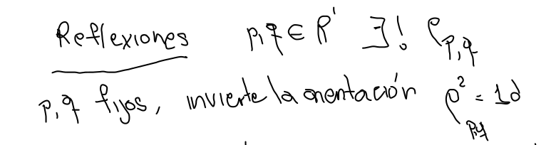
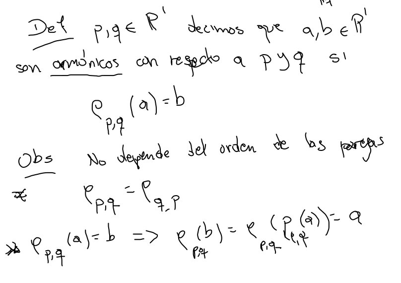
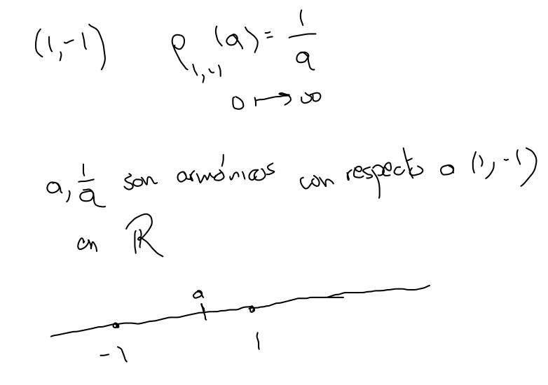
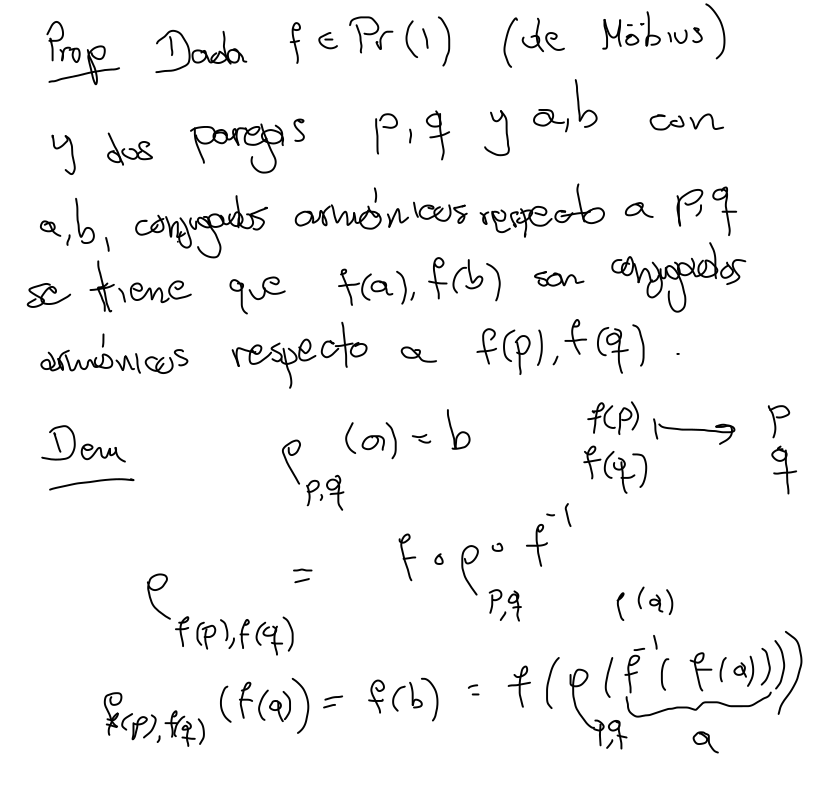
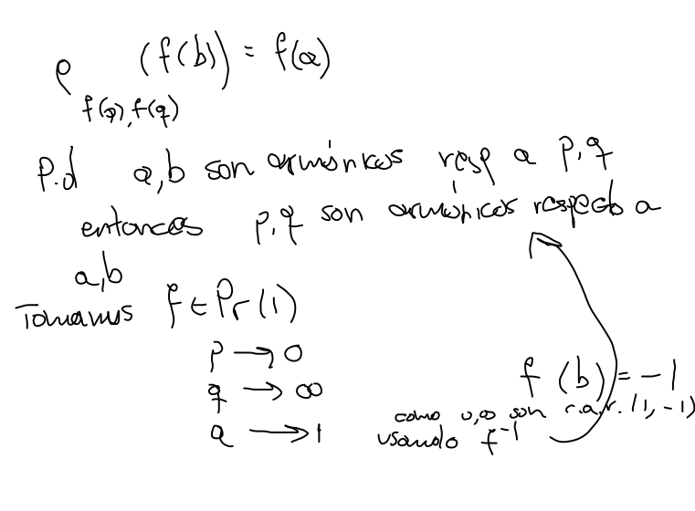
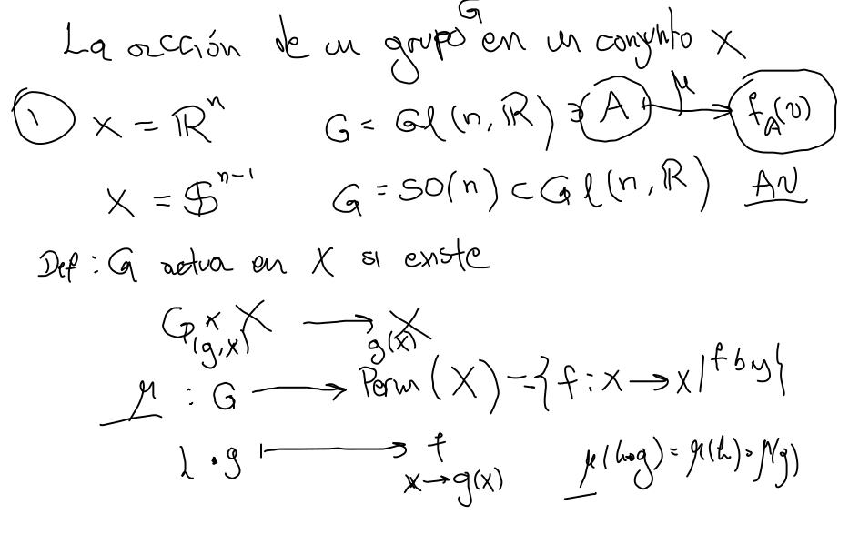
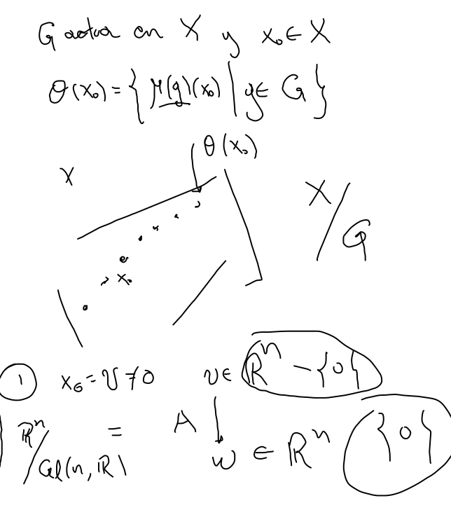
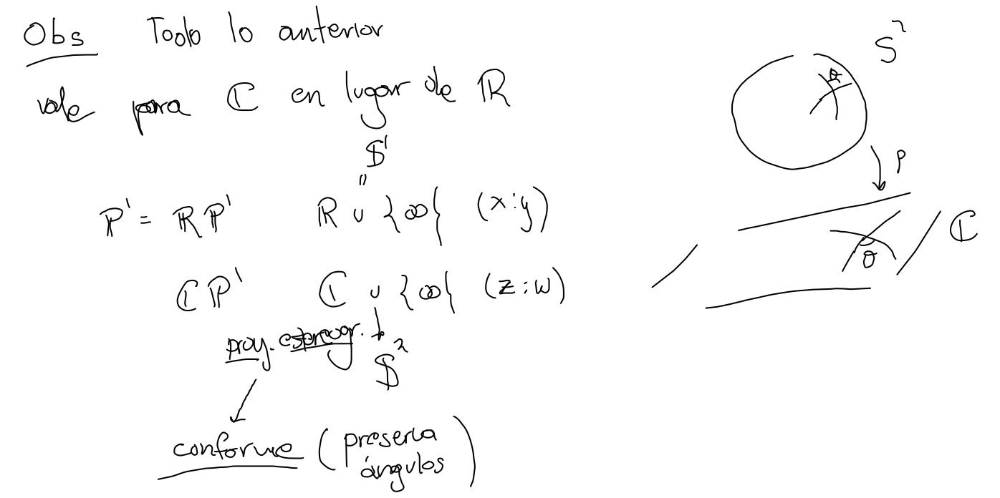

Definición.- aaa y bbb son armónicos respecto a ppp y qqq, si la reflexión en ppp y qqq manda a aaa en bbb, es decir, si ρp,q(a)=b\rho_{p,q} (a) = bρp,q(a)=b.


Proposición.- Las transformaciones de Möbius preservan cuartetas armónicas y son transitivas en ellas.

   